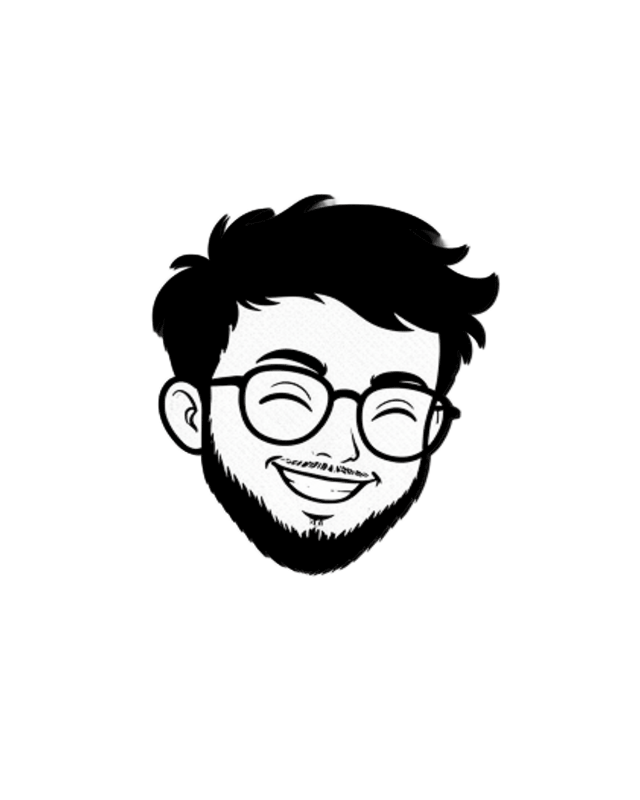

Привет, я Султан
Я проектирую продукты, которые делают сложные системы простыми.
За 3 года в B2B и стартапах я запускал внутренние инструменты с нуля и проектировал системы, которыми пользуются более 4000 сотрудников каждую рабочую неделю.
Я глубоко погружаюсь в UX и внимателен к деталям, но при этом думаю как продуктовый дизайнер: внедряю метрики CSAT, CES и NPS, чтобы учитывать пользовательский опыт в принятии решений.
Ищу команду в крупной продуктовой компании, где можно работать с масштабом и расти как продуктовый дизайнер.